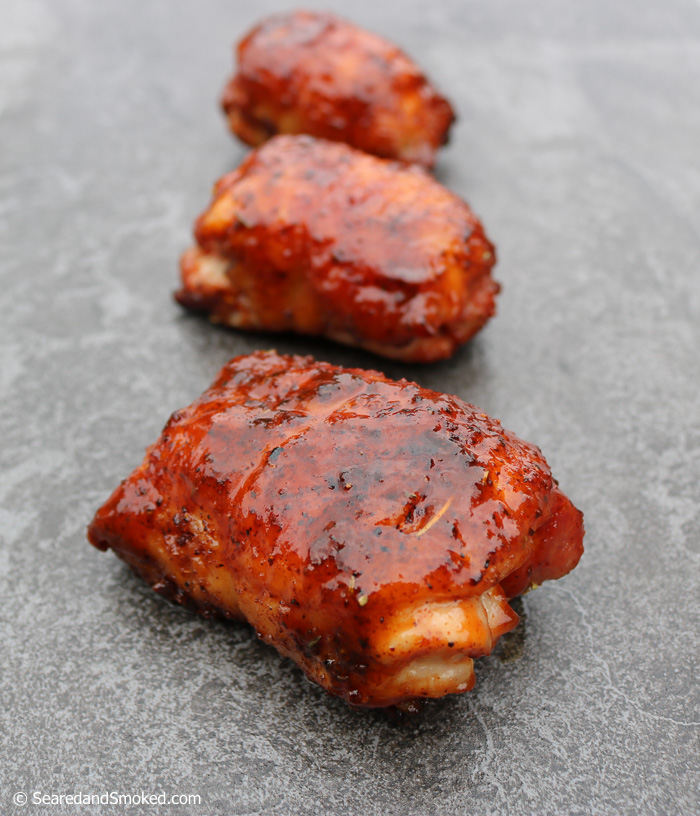

Smoked Chicken Thighs

Instructions for Delicious Smoked Chicken Thighs
Using this guide will help you to make perfectly cooked chicken thighs with a beautiful smokey flavor your family will love and
your friends will crave!
Ingredients
- 3 lbs fresh chicken thighs
- 2 tbsp Smokey Sweet BBQ Rub
Steps
- Preheat smoker to 230 degrees
- Coat chicken with a liberal amount of the BBQ rub
- Place on smoker and cook 3 hours or until temperature reaches 175 degrees
- Let meat rest 15 minutes before serving